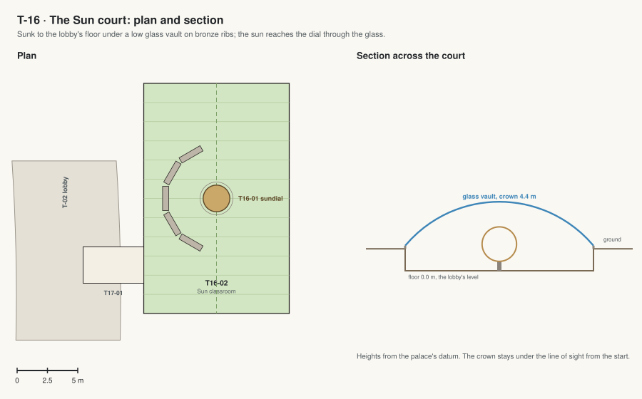

T-16 · The Sun court
An armillary sundial in a sunken court under a low glass vault, behind the classroom wing where the solar field stood; in from the lobby by a short link.

| Code | Room | What it is for | Size |
|---|---|---|---|
| T16-01 | Armillary sundial | A bronze armillary sphere 2.2 m across on a stone plinth, its rod parallel to Mars's axis; the hour ring shows the sol's 24 Mars hours (each 1 h 2 min long). Also: Lessons on angles, time and orbits. | 6 m² |
| T16-02 | Sun classroom | Five long stone benches with cushions in a half-circle facing the sundial, on basalt paving, under a low glass vault on bronze ribs; in from the lobby by a short link. Also: A quiet seat in the morning sun. | 230 m² |